In Chapter 1 we treated audio signals as if they always flowed by in a continuous stream at some sample rate. The sample rate isn't really a quality of the audio signal, but rather it specifies how fast the individual samples should flow into or out of the computer. But audio signals are at bottom just sequences of numbers, and in practice there is no requirement that they be ``played" sequentially. Another, complementary view is that they can be stored in memory, and, later, they can be read back in any order--forward, backward, back and forth, or totally at random. An inexhaustible range of new possibilities opens up.
For many years (roughly 1950-1990), magnetic tape served as the main storage medium for sounds. Tapes were passed back and forth across magnetic pickups to play the signals back in real time. Since 1995 or so, the predominant way of storing sounds has been to keep them as digital audio signals, which are read back with much greater freedom and facility than were the magnetic tapes. Many modes of use dating from the tape era are still current, including cutting, duplication, speed change, and time reversal. Other techniques, such as waveshaping, have come into their own only in the digital era.
Suppose we have a stored digital audio signal, which is just a sequence of
samples (i.e., numbers)  for
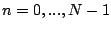, where
for
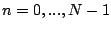, where  is the length
of the sequence. Then if we have an input signal
is the length
of the sequence. Then if we have an input signal  (which we can imagine
to be flowing in real time), we can use its values as indices to look up values
of the stored signal
(which we can imagine
to be flowing in real time), we can use its values as indices to look up values
of the stored signal  . This operation, called
wavetable lookup,
gives us a new signal,
. This operation, called
wavetable lookup,
gives us a new signal,  , calculated as:
, calculated as:
| 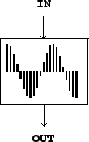 |
Two complications arise. First, the input values,  , might lie outside
the range 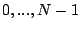, in which case the wavetable
, might lie outside
the range 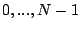, in which case the wavetable  has no value and
the expression for the output
has no value and
the expression for the output  is undefined. In this situation we might
choose to
clip the input, that is, to substitute 0 for
anything negative and
is undefined. In this situation we might
choose to
clip the input, that is, to substitute 0 for
anything negative and  for anything N or greater. Alternatively, we might
prefer to wrap the input around end to end. Here we'll adopt the convention that
out-of-range samples are always clipped; when we need wraparound, we'll
introduce another signal processing operation to do it for us.
for anything N or greater. Alternatively, we might
prefer to wrap the input around end to end. Here we'll adopt the convention that
out-of-range samples are always clipped; when we need wraparound, we'll
introduce another signal processing operation to do it for us.
The second complication is that the input values need not be integers; in other
words they might fall between the points of the wavetable. In general, this
is addressed by choosing some scheme for interpolating between the points of
the wavetable. For the moment, though, we'll just round
down to the nearest integer below the input. This is called
non-interpolating wavetable lookup, and its full definition is:
Pictorally, we use 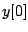 (a number) as a
location on the horizontal axis of the wavetable shown in Figure 2.1,
and the output, 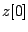, is whatever we get on the vertical axis; and the
same for 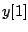 and 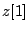 and so on. The ``natural" range for the input  is
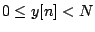. This is different from the usual range of an audio
signal suitable for output from the computer, which ranges from -1 to 1 in
our units. We'll see later that the usable range of input values,
from 0 to
is
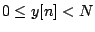. This is different from the usual range of an audio
signal suitable for output from the computer, which ranges from -1 to 1 in
our units. We'll see later that the usable range of input values,
from 0 to  for non-interpolating lookup, shrinks slightly if interpolating lookup is used.
for non-interpolating lookup, shrinks slightly if interpolating lookup is used.
Figure 2.2 (part a) shows a wavetable and the result of using two
different input signals as lookup indices into it. The wavetable
contains 40 points, which are numbered from 0 to 39. In part (b), a
sawtooth wave is used as the input signal  . A sawtooth wave
is nothing but a ramp function repeated end to end. In this example the
sawtooth's range is from
. A sawtooth wave
is nothing but a ramp function repeated end to end. In this example the
sawtooth's range is from  to
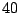 (this is shown in the vertical axis). The sawtooth wave thus scans
the wavetable from left to right--from the beginning point 0 to the endpoint
39--and does so every time it repeats. Over the fifty points shown
in Figure 2.2 (part b) the sawtooth wave makes
two and a half cycles. Its period is twenty samples, or in other
words the frequency (in cycles per second) is
to
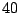 (this is shown in the vertical axis). The sawtooth wave thus scans
the wavetable from left to right--from the beginning point 0 to the endpoint
39--and does so every time it repeats. Over the fifty points shown
in Figure 2.2 (part b) the sawtooth wave makes
two and a half cycles. Its period is twenty samples, or in other
words the frequency (in cycles per second) is  .
.
| 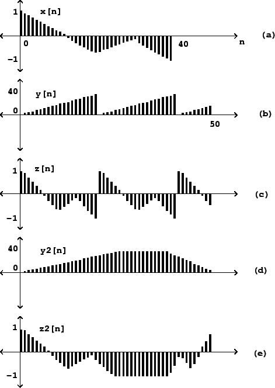 |
Part (c) of Figure 2.2 shows the result of applying wavetable
lookup, using the table  , to the signal
, to the signal  . Since the sawtooth input
simply reads out the contents of the wavetable from left to right, repeatedly,
at a constant rate of precession, the result will be a new periodic signal,
whose waveform (shape) is derived from
. Since the sawtooth input
simply reads out the contents of the wavetable from left to right, repeatedly,
at a constant rate of precession, the result will be a new periodic signal,
whose waveform (shape) is derived from  and whose frequency is determined
by the sawtooth wave
and whose frequency is determined
by the sawtooth wave  .
.
Parts (d) and (e) show an example where the wavetable is read in a nonuniform
way; since the input signal rises from  to
to  and then later recedes to
and then later recedes to
 , we see the wavetable appear first forward, then frozen at its endpoint,
then backward. The table is scanned from left to right and then, more quickly,
from right to left. As in the previous example the incoming signal controls
the speed of precession while the output's amplitudes are those of the wavetable.
, we see the wavetable appear first forward, then frozen at its endpoint,
then backward. The table is scanned from left to right and then, more quickly,
from right to left. As in the previous example the incoming signal controls
the speed of precession while the output's amplitudes are those of the wavetable.